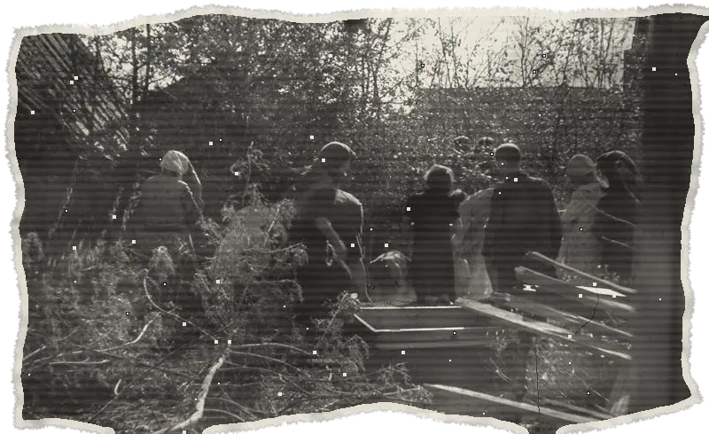
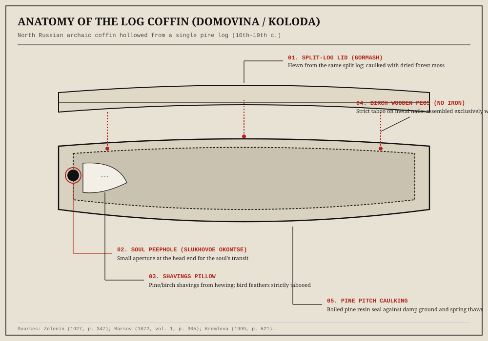

VOL. I · PLATE B · 02 / 09
THE BODY
Washing, dressing, carrying
Before it becomes a memory, the dead is an object that must be handled. The handling is the ritual.
Documented 19th–20th centuries · European Russia · Orthodox practice with local custom

B / 01
Washing, and where the water goes
Zelenin’s survey of East Slavic funeral rites puts the washing first: the body is washed in warm water and dressed in new clothes, and in many places this was once done while the dying person was still alive, because people believed one appears in the next world in the clothes in which one died. Since the moment of death is hard to catch, he suggests, washing the already dead became usual. A vessel of water stood beside the dying person for the soul to bathe in; some said they had seen the water stir. It stayed on the table or the windowsill for forty days, and some held that the soul drank from it (Zelenin 1991, pp. 345–346).
For Russians he lists what happened to everything used in the last washing: the vessel, the washcloth, the straw on which the person died, sometimes the boards. These were carried to the field or beyond the village edge, and the vessel was usually smashed. In spring they could be thrown into a river in flood; if the master of the house had died they were often buried in the yard ‘so that the domovoi should not die out’ (citing Zavoiko, p. 91). The place where they lay inspired dread. Water that happened to be standing in the house at the moment of death was not drunk but poured out. A pregnant woman must not wash the dead, or her child will die. Ukrainians, he adds, poured the water where neither people nor animals walk, between two outbuildings or under a maize drier; that is a comparison, not Russian evidence (pp. 346, 349).
The question of who washed the body and what they received is documented in systematic ethnographic surveys (Kremleva 1999, pp. 518–521; Baiburin 1993, pp. 102–108). Washing was entrusted almost exclusively to elderly women past childbearing age (myl'shchitsy or obmyval'shchitsy), often widows, or to unrelated neighbors. Close blood relatives—especially mothers, wives, and children—were strictly prohibited from washing the corpse: folk explanations held that a kin's tears would burn the dead, and the ritual aimed precisely at dismantling the physical ties between the deceased and the living household. Monetary wages were never paid: accepting money for handling the dead was regarded as a grave sin. Instead, the washers received ritual gifts 'for the remembrance of the soul' (na pomin dushi): towels, linen cuts, headscarves, the soap used in washing, or items of the deceased’s clothing.
Barsov gives a compact Olonets version of the same sequence. As soon as people saw that someone was dying, a cup of water was set on the window; if the water stirred, they said ‘the little soul is washing’. For washing the body very old women were invited; he does not say whether they were kin or were paid. The dead person is usually washed with warm water on straw, opposite the chimney, from a clay vessel and rubbed twice with soap; in some places, Kondushi among them, a dead woman’s hair is cut and put in the coffin. The soap is then thrown into the river and the water poured out there, though sometimes both are kept: he says that sorcerers use the water to harm newly-weds, that a person made to drink it will waste away, and that the soap is used against fever (1872, pp. 302–303). The sorcery beliefs are reported, not observed; the passage names no informant.


B / 02
Dress, and the ban on iron
Many old people sewed their own death clothes in advance and put them on before major feasts and in violent thunderstorms; the clothes were mostly white. If they were sewn for someone already dead, the seams were made with the needle pointing away from the sewer and toward the dead, in places with the left hand, and an old shirt that had to come off was torn. No outer garment was put on the dead; its place was taken by a savan, which could be a white shirt closed like a sack, or a length of cloth wrapped round and bound with a long strip. Modern or smart clothes were not used. Instead of boots, bast shoes or soft cloth footwear (kaligi); if the dead were already in boots, the iron nails were pulled out (Zelenin 1991, pp. 346–347).
Cross and belt were strictly required; the cross was sometimes copper (silver was not allowed), and wooden ones were common. A woman never wore an apron; a man always had a hat, laid beside the body if the priest objected. A girl who died unmarried was dressed as for a wedding, with a ring on the middle finger of the right hand, gifts distributed by her kin as at a wedding and a wedding loaf on the coffin lid; a bachelor could be chosen as her ‘groom’ to walk behind the coffin, and something similar happened at a young man’s burial. Zelenin generalises these practices for the East Slavs; he does not date them or separate Russians from the others in every detail, so each belongs here to the region and group he names, where he names one.
Barsov (1872, p. 303) says that in some places the dying person was asked beforehand what he wished to wear. For the Petrozavodsk, Olonets and Povenets districts he lists white boots or shoes sewn with one waxed thread, a shirt with a belt and a bone comb, a white balakhon with a sash over it, and a length of linen as a cover; in many Kargopol parishes a shroud was put on over a plain shirt. A cross on a woollen thread was always added, and for an Old Believer a rosary (chetki) as well. Clothes for the dead were sewn ‘inside out’, the needle pointing away from the sewer, which agrees with the seam rule above. His white boots or shoes differ from the bast shoes and soft footwear that Zelenin gives; the two describe different places and are not made to agree here.
B / 03
The coffin and what went into it
The Russian word domovina and the older koloda name a coffin once made from a single trunk, with a small window and the head end often rounded; Zelenin says that by his time coffins were made of boards, fastened with wooden pegs, not iron nails, in places with bast. Pious people used to make their own coffins in advance, which was taken as a sign of long life, and scattered grain in them and gave grain to beggars (1991, p. 348). Shavings from the boards and dry leaves of the bath-broom were the usual bedding; the pillow was cut from the cloth of the burial clothes or from hay and stitched on three sides.
Zelenin lists what was put in: bread, sometimes salt and butter, an egg at Easter, until recently a bottle of vodka for a man; copper coins tied in a kerchief at the belt, and coins in the grave. People read the coins differently: as payment for the burial place, as a way to keep the cattle from following the master (OR RGO, III, 1102), or, in the later reading, as a fare for crossing the fiery river or to pay off debts. For Belarusian forest areas he lists personal items, a pipe, a pouch, a child’s toy, a craftsman’s small tools, which he does not tie to Russians. The transition from handmade to purchased coffins is traced by late nineteenth- and early twentieth-century surveys (Kremleva 1999, pp. 521–523). In traditional villages, self-made hollowed trunks (kolody) or board coffins pegged without iron nails predominated well into the early twentieth century; elderly peasants commonly prepared their own coffins decades in advance, storing them in the granary or attic and filling them with rye grain as a sign of abundant life. In industrial settlements, railway towns, and suburban districts from the 1880s onward, carpenter workshops and trade stalls introduced mass-produced pine coffins, sold for 1 ruble 50 kopecks to 3–5 rubles for basic painted models. In remote northern and Siberian settlements, however, the handmade peg-joined coffin persisted throughout the Soviet era.
Barsov (1872, pp. 302, 304–305) describes the Olonets coffin. Among the Suisar and Zaonezhye people it is a domovishche of dry boards, an oblong box; in some parishes, Syamozero and Badogi among them, openings with glass are cut at the sides opposite the dead person’s shoulders, elsewhere the glass is laid inside. In parts of the Ladeinoe Pole, Povenets and Kargopol districts (Lokshmoretsk parish is named) the coffin is a hollowed aspen or pine trunk, again with a small piece of glass. Shavings and chips from the coffin are thrown into a lake or taken to the forest. At Korela and elsewhere, leaves knocked off bath-brooms serve as bedding and fill the pillow. Gifts differ by place: bread in Nimenskoe parish (Kargopol district), pies at Brusno (Petrozavodsk district), a needle for women at Verkhovye (Olonets district), an egg for someone who dies at Easter, cut nails for the climb up the glass mountain. These are Barsov’s local notes and are not generalised.
| Object | Documented function | Evidence |
|---|---|---|
| Coffin (grob) | Container; carried to the grave; lid closed at the rite | documented |
| Death clothes | Sewn in advance by many old people, mostly white; no iron, no metal buttons | documented |
| Funeral cloth / shroud | Wraps or covers the body; regional forms differ | documented |
| Washing vessel, cloth, straw | Carried to the field or beyond the village edge, vessel smashed; or buried in the yard (Russians, per Zelenin) | documented |
| Paper band on the brow | Church-supplied item in Orthodox burial | not verified here |
B / 06
Where the water goes, and what the soap keeps
Two Vologda descriptions give the disposal of washing water a purpose, and the purposes differ. For the Middle Sukhona, an overview page says the water was poured out in a special way, with a swing, at the corner of the house, in the yard and at crossroads, and that soap used in the washing was afterwards used to calm a restless family member or a restless animal, with a formula likening them to the dead who no longer kick. S. Adonyeva, speaking of the Vologda tradition recorded in the late twentieth and early twenty-first centuries, says that the water, washcloth and soap are destroyed so that they cannot be used in harmful magic. In one account the leftovers are a remedy, in the other a danger. The Great Russian Encyclopedia, read only in extract, calls washing an obligatory part of the rite and notes that the washing, dressing and making of the coffin may be done by specially hired people. The atlas does not decide whether the two Vologda accounts describe two beliefs or one belief told twice; it keeps both and treats the plate’s earlier statement about a prohibition around disposal as the common ground.
Academic ethnography (Kremleva 1999, pp. 519–520; Baiburin 1993, pp. 102–106) confirms that across European Russia the washing water ('dead water'), soap, and towels were treated as objects of acute ritual ambivalence. Because water absorbed the ritual impurity of physical death, it was poured into unfrequented spots (under the blank corner of the house, along fences, under nettles, or into a specially dug pit) where neither human foot nor livestock could tread. The soap, conversely, could be either buried to prevent sorcerers from using it for curses, placed into the coffin, or preserved as a potent remedy to wash ailments or calm restless beasts, likening them to the motionless dead.
Lament at the washing
Lament at the washing of the body (excerpt)
Причитание при обмывании тела (фрагмент)
Original
English translation
Excerpt Paraphrase of the opening address to the washing women. The original uses diminutive forms throughout. This atlas does not reproduce the dialect text word-for-word but renders the formula and content faithfully.
The address to neighbouring women who performed the ritual washing of the body is one of the standard opening formulae in Barsov's collection. The diminutive 'лебёдушки' (little swans) is a term of address for women of the same village. The commands that follow are liturgical rather than instructional: they were uttered over women already at work. The lament ends at the point where the washing is complete and the body is dressed.
- белые лебёдушки
- Little white swans: a formulaic address to neighbouring women performing a ritual task.
- доски новые
- New boards: the temporary surface on which the body was laid out before being placed in the coffin.
Source E. V. Barsov, Prichitaniya Severnogo kraia, vol. 1 (Moscow, 1872), no. 2.
Rights Public domain. Barsov died in 1917; published 1872. Public domain in Russia (70 years p.m.a.) and in the United States (published before 1929).

Apparatus sources · related plates · terms
Sources for this plate
- culture-sukhona Culture.ru object overview (compiler not named in the extract read) — Похоронный обряд в традиции Средней Сухоны (n.d.)
- adonyeva2026 Adonyeva, S. (interview) — «Ух, был да и нету, был да и нету»: антрополог — о русских традициях похорон (2026)
- bre-eslavic-funeral-washing Great Russian Encyclopedia (entry author not read) — Восточнославянская похоронная обрядность (n.d.)
- zelenin1927 Zelenin, Dmitry K. — Vostochnoslavianskaia etnografiia (Russian translation of Russische (Ostslavische) Volkskunde, Berlin–Leipzig 1927), transl. K. D. Tsivina (1991 (German original 1927))
- barsov1872 Barsov, Elpidifor Vasil’evich — Prichitaniia Severnogo kraia (1872–1886)
- kremleva1999 Kremleva, Irina A. — Pokhoronno-pominalnye obychai i obriady [Funeral and Memorial Customs and Rites] (1999)
- baiburin1993 Baiburin, Albert Kashfullovich — Ritual v traditsionnoi kul’ture (1993)
URLs, access dates and limitations are in the bibliography.
Related plates
Terms in this plate
Citation
Archaeology of Russian Death. Plate B: THE BODY. Washing, dressing, carrying // An Atlas of Material Culture and Ethnography. 2026. URL: https://DmitryLeLeE.github.io/rus_death/plates/b-body.html.